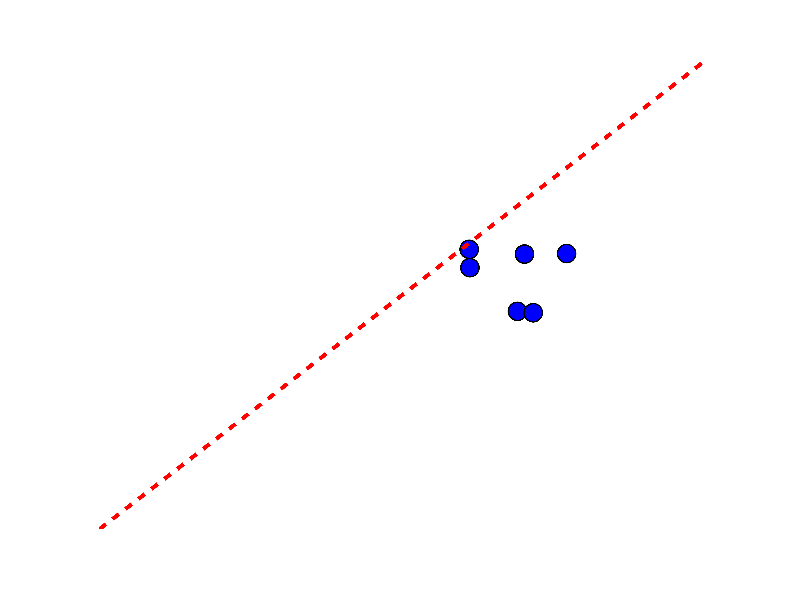

Agata Brajdic
Given a starting and ending location,
predict how long will a taxi ride take and how much will it cost.
Without a real-time traffic data, can we make a reliable prediction using the data from the past?
(173 million 2013 NYC taxi rides made publicly available recently)
Peek into data >>Let's take a cab from Union Sq to Times Sq...
Sample the whole dataset
Sample the whole dataset
How Cabcalc does it:
How Cabcalc does it:
App screenshot
NYC taxi trips dataset (20GB compressed csv) imported into MySQL
Cleaned inconsistent/wrong data
Created multiple search indices to speed up SQL queries
Database sharding for even more speed up
Built statistical models using 5 ML techniques:
For each technique, a family of models was built using 3-5 dimensional hyperparameters (grid search)
Tested on out-of-sample data without and with spatial locality
Cluster size = 0.3 miles
Cluster size = 0.8 miles
Cluster size = 2 miles
Predictive model:
Visualization:
Agata Brajdic
Pickup trends
Fare estimator example